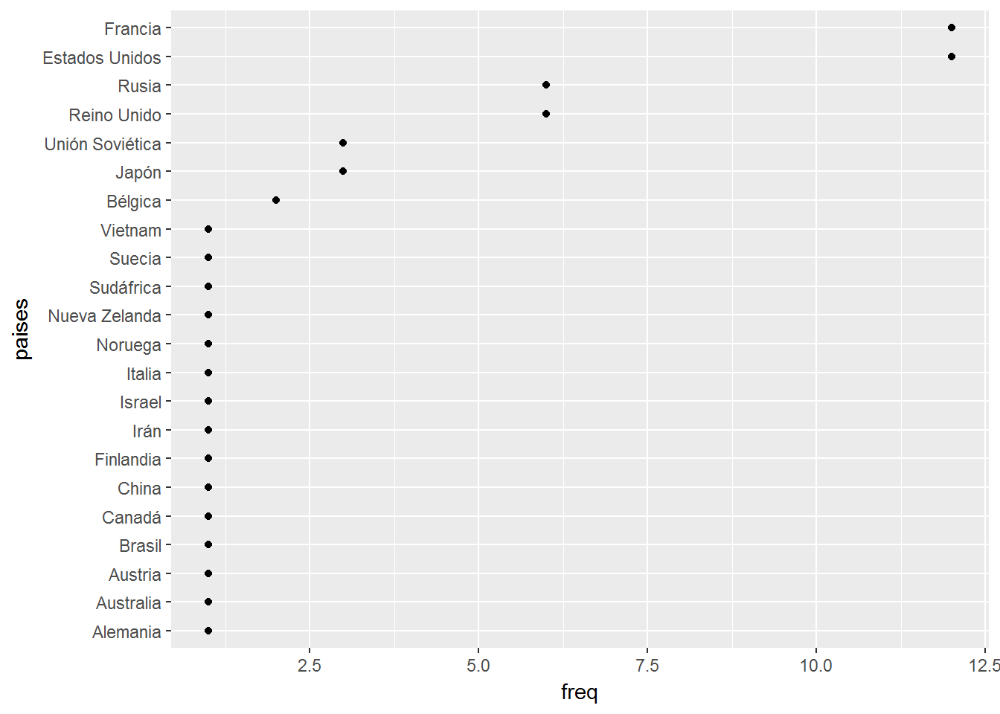
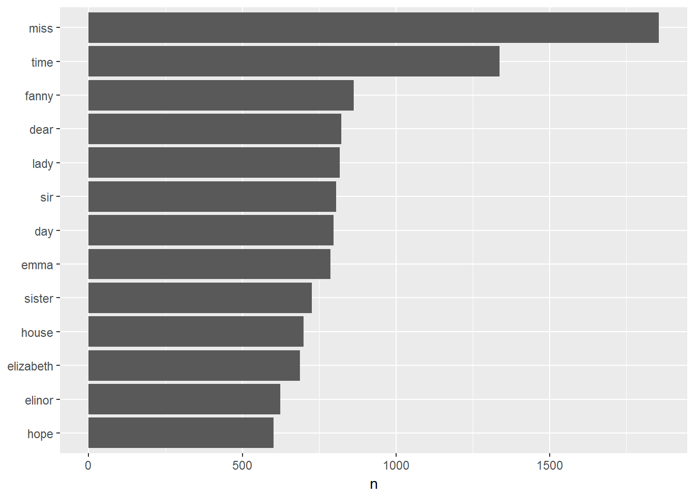
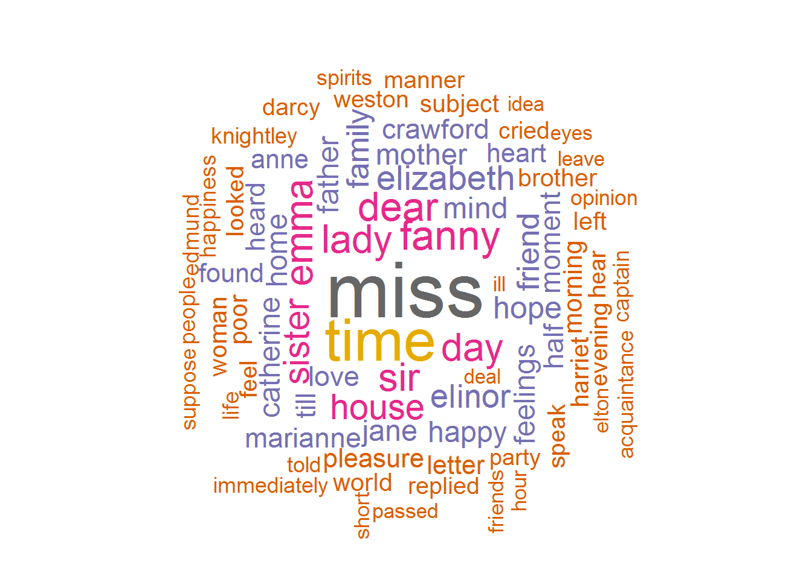
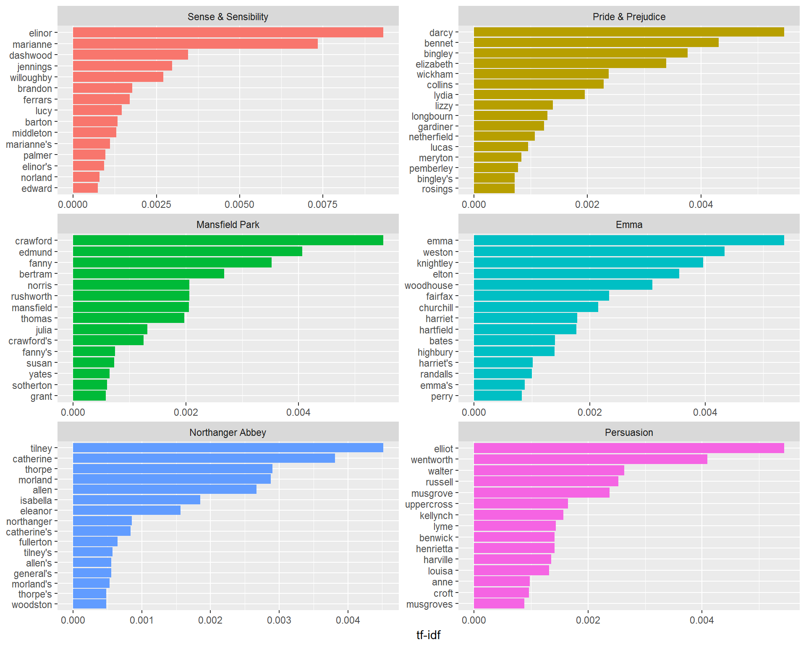

2 Introducción a la minería de texto
2.1 Aplicaciones
La minería de texto nace de una combinación de minería de datos, análisis de texto cuantitativo y procesamiento automático del lenguaje.
Las principales aplicaciones son:
- Motores de búsqueda
- Detección de plagio
- Clasificación de correo electrónico (detección de SPAM)
- Búsqueda de opiniones (evaluaciones positivas o negativas de un servicio, etc.)
- Organización de información (tipologías, ontologías)
- Traducción automática
- …
2.2 Conceptos básicos
2.2.1 Formato de los datos textuales
Podemos distinguir tres tipos principales de textos:
- Tablas que consisten en filas y columnas
- Textos sin formato (extracción de pdf, …)
- Documentos semiestructurados (paginas web, correos electrónicos, RSS)
2.2.2 Unidad de análisis: el token
Un token es una unidad significativa de texto, a menudo una palabra (o una secuencia de palabras, oración, ..), en la cual estamos interesados en utilizar para un análisis posterior. La tokenización es el proceso de dividir el texto en tokens y es uno de los primeros pasos del análisis de textos.
2.2.3 Preparación de los datos textuales
Antes de poder utilizar métodos puramente cuantitativos de minería de textos, se debe preparar los documentos. Como regla general, pasamos por los siguientes pasos (no necesariamente en este orden preciso):
- Creación del corpus
- Limpieza y filtraje de la información relevante
- Análisis del texto e interpretación de los resultados
2.3 Manipulación y análisis básicos de texto
Las tablas bajadas de Internet (y datos procedentes de otras fuentes) exigen frecuentemente un proceso de limpieza de datos o de extracción de la información que contienen.
La función gsub se usa muy a menudo para dicha limpieza de datos. Una llamada a gsub tiene la forma
gsub("h", "H", c("hola", "búho"))## [1] "Hola" "búHo"donde el primer argumento, "h" es una expresión regular; la función gsub modifica las ocurrencias de esta expresión regular por el segundo argumento, "H" en este caso. El tercer argumento es un vector que contiene cadenas de texto en las que se realiza la sustitución.
Las expresiones regulares son muy útiles para manipular texto. Conviene aprender algunas de las más frecuentes, como por ejemplo, las que identifican caracteres que aparecen al principio de un texto,
gsub("^h", "H", c("hola", "búho"))## [1] "Hola" "búho"o al final del mismo,
gsub("o$", "os", c("hola", "búho"))## [1] "hola" "búhos"Una función emparentada con gsub es grep, que busca cadenas en las que aparece una determinada expresión regular:
grep("^h", c("hola", "búho"))## [1] 1La salida de la expresión anterior nos indica que el patrón cadena de texto que comienza con la letra h aparece solo en la posición número 1 del vector.
colors() es una función que devuelve el nombre de más de 600 colores en R. Usándolo,
Encontrar * Aquellos cuyo nombre contenga un número (posiblemente tengas que investigar cómo se expresa cualquier número como expresión regular) * Aquellos que comiencen con yellow * Aquellos que contengan blue
Los números que aparecen en la tabla descargada en la sección anterior (y contenidos en ibex) no tienen formato numérico. Para convertirlos en números de verdad, transfórmalos adecuadamente:
-
Usar
gsubpara cambiar “.” por “” (i.e., nada) en las columnas de interés. Ten en cuenta que.es el comodín de las expresiones regulares; el punto es\.. -
Usar
gsubpara cambiar,por.en las columnas de interés. -
Finalmente, usar
as.numericpara cambiar texto resultante por valores numéricos.
Otra función muy útil para procesar texto es paste, que tiene un comportamiento distinto según se use con el argumento sep o collapse.
paste("A", 1:6, sep = ",")## [1] "A,1" "A,2" "A,3" "A,4" "A,5" "A,6"paste("Hoy es ", date(), " y tengo clase de R", sep = "")## [1] "Hoy es Fri Jun 01 10:12:49 2018 y tengo clase de R"paste("A", 1:6, collapse = ",")## [1] "A 1,A 2,A 3,A 4,A 5,A 6"sep y collapse pueden combinarse:
paste("A", 1:6, sep = "_", collapse = ",")## [1] "A_1,A_2,A_3,A_4,A_5,A_6"Para la operación inversa, la de partir cadenas de texto, se usa la función strsplit:
strsplit("Hoy es martes", split = " ")## [[1]]
## [1] "Hoy" "es" "martes"strsplit(c("hoy es martes", "mañana es miércoles"), split = " ")## [[1]]
## [1] "hoy" "es" "martes"
##
## [[2]]
## [1] "mañana" "es" "miércoles"Advierte que esta función devuelve una lista de cadenas de texto.
Crea una función que tome los nombres de ficheros
ficheros <- c(“ventas_20160522_zaragoza.csv”, “pedidos_firmes_20160422_soria.csv”)
y genere una tabla con una fila por fichero y tres columnas: el nombre del fichero, la fecha y y la provincia. Nota: puedes crear una función que procese solo un nombre de fichero y aplicársela convenientemente al vector de nombres.
Esas son las funciones fundamentales para la manipulación básica de texto en R. Existen funciones más ágiles en otros paquetes como stringro tidyr.
A continuación una aplicación de uso del paquete stringr donde se describe como se distribuyen las Medallas Fields (el “nobel” en matemáticas) entre los países, utilizando la información proporcionada por la wikipedia.
Empezamos extrayendo la tabla de interés desde la Wikipedia:
require(rvest)
mfield<-read_html("https://es.wikipedia.org/w/index.php?title=Medalla_Fields&oldid=103644843")
mfield %>% html_nodes("table") ## {xml_nodeset (2)}
## [1] <table class="infobox" style="width:22.7em; line-height: 1.4em; text ...
## [2] <table class="wikitable" border="1">\n<tr>\n<th>Año</th>\n<th>Medall ...tabla <- mfield %>% html_nodes("table") %>% .[[2]] %>% html_table(header=TRUE)
knitr:::kable(tabla %>% head(10))| Año | Medallistas |
|---|---|
| 1936 | Lars Ahlfors ( Finlandia), Universidad Harvard |
| 1936 | Jesse Douglas ( Estados Unidos), Instituto Tecnológico de Massachusetts |
| 1950 | Laurent Schwartz ( Francia), Universidad de Nancy |
| 1950 | Atle Selberg (Noruega), Instituto de Estudios Avanzados de Princeton |
| 1954 | Kunihiko Kodaira ( Japón), Universidad de Princeton |
| 1954 | Jean-Pierre Serre ( Francia), Universidad de París |
| 1958 | Klaus Friedrich Roth ( Reino Unido), Universidad de Londres |
| 1958 | René Thom ( Francia), Universidad de Estrasburgo |
| 1962 | Lars V. Hörmander (Suecia), Universidad de Estocolmo |
| 1962 | John Willard Milnor ( Estados Unidos), Universidad de Princeton |
Ahora, se extraen los países que vienen entre paréntesis usando expresiones regulares (ver ayuda de R sobre estas expresiones:
require(tidyverse)
tmp <- tabla$Medallistas %>% str_extract("\\([^()]+\\)") #extrae contenido entre parentesis
tmp <- substring(tmp,2,nchar(tmp)-1)
paises<- tmp %>% str_split_fixed(" y ", 2) %>% str_trim() %>% c()Representación de distribución de medallas entre los países:
freq=c(table(paises))[-1] #el -1 es para quitar la frecuencia de ""
qplot(freq,reorder(names(freq),freq),ylab="paises")
2.4 Creación de un Corpus con tidytext
El formato de texto tidy es básicamente una tabla con un token por fila. Este formato se presta muy bien a la minería de datos textuales.
2.4.1 Tokenización con la función unnest_tokens
Aquí unas frases extraídas del libro “Niebla” de Unamuno:
texto<-c("Eso es insultar al lector, es llamarle torpe","Es decirle: ¡fíjate, hombre, fíjate, que aquí hay intención!","Y por eso le recomendaba yo a un señor que escribiese sus artículos todo en bastardilla","Para que el público se diese cuenta de que eran intencionadísimos desde la primera palabra a la última.")
texto## [1] "Eso es insultar al lector, es llamarle torpe"
## [2] "Es decirle: ¡fíjate, hombre, fíjate, que aquí hay intención!"
## [3] "Y por eso le recomendaba yo a un señor que escribiese sus artículos todo en bastardilla"
## [4] "Para que el público se diese cuenta de que eran intencionadísimos desde la primera palabra a la última."Para analizar este tipo de información textual con tidytext, se le da un formato de tabla:
require(tidyverse)
texto_df <- data_frame(fila = 1:4, texto = texto)
texto_df## # A tibble: 4 x 2
## fila texto
## <int> <chr>
## 1 1 Eso es insultar al lector, es llamarle torpe
## 2 2 Es decirle: ¡fíjate, hombre, fíjate, que aquí hay intención!
## 3 3 Y por eso le recomendaba yo a un señor que escribiese sus artícul~
## 4 4 Para que el público se diese cuenta de que eran intencionadísimos~Todavía esta tabla no permite un análisis del texto. No podemos filtrar las palabras o calcular sus frecuencias, puesto que cada fila se compone de varias palabras combinadas. Necesitamos transformarla de manera que un token por fila .
A menudo, el token es una secuencia de caracteres entre dos separadores. Un separador puede ser un “blanco”, una puntuación, un paréntesis, etc. Para segmentar el texto en tokens individuales y transformarlo en una estructura de datos utilizamos aquí la función ’unnest_tokensdel paquetetidytext`:
require(tidytext)
texto_df %>% unnest_tokens(palabra, texto)## # A tibble: 51 x 2
## fila palabra
## <int> <chr>
## 1 1 eso
## 2 1 es
## 3 1 insultar
## 4 1 al
## 5 1 lector
## 6 1 es
## 7 1 llamarle
## 8 1 torpe
## 9 2 es
## 10 2 decirle
## # ... with 41 more rowsLos dos argumentos básicos de esta función son nombres de columnas. Primero tenemos el nombre de la columna de salida que se creará cuando el texto se procese (‘palabra’ en este caso) y luego la columna de entrada de la que proviene el texto (‘texto’ en este caso).
Esta función usa el paquete tokenizers para separar cada línea de texto en tokens. La tokenización predeterminada es para palabras, pero otras opciones incluyen caracteres, n-grams, oraciones, líneas, párrafos o expresiones regulares. A continuación extraemos bigramms que pueden ser muy útiles para identificar el idioma:
require(tidytext)
texto_df %>% unnest_tokens(palabra, texto, token="ngrams", n=2) # bigramm## # A tibble: 47 x 2
## fila palabra
## <int> <chr>
## 1 1 eso es
## 2 1 es insultar
## 3 1 insultar al
## 4 1 al lector
## 5 1 lector es
## 6 1 es llamarle
## 7 1 llamarle torpe
## 8 2 es decirle
## 9 2 decirle fíjate
## 10 2 fíjate hombre
## # ... with 37 more rowsDespués de usar unnest_tokens, hemos dividido cada fila para que haya un token (palabra) en cada fila de la nueva base de datos; la tokenización predeterminada en unnest_tokens() es para palabras sueltas. Cabe mencionar que en el resultado:
- Se conservan otras columnas, como el número de la fila de cada palabra.
- La puntuación ha sido eliminada.
- Por defecto, los tokens están en minúsculas, lo que hace más fácil la comparación con otros textos (usar el
to_lower = FALSEpara desactivarlo).
2.4.2 Tokenización de la obra de Jane Austen
Con el formato anterior se puede manejar varios documentos incluyéndolos en una única base. Para ilustrarlo, se considera el texto de las seis novelas publicadas por Jane Austen incluidas en el paquete janeaustenr.
En este paquete, los textos vienen en filas que son parecidas a las líneas impresas en un libro físico. A continuación, se anota cada fila por su numero, el capitulo y libro al que pertenece.
require(janeaustenr)
libros <- austen_books() %>%
group_by(book) %>%
mutate(linenumber = row_number(),
chapter = cumsum(str_detect(text, regex("^chapter [[:digit:]ivxlc]", ignore_case=TRUE)))) %>%
ungroup()A partir de esta base de datos textuales ordenados, se puede generar corpus de tokens tal y como se hizo anteriormente mediante la función unnest_tokens:
tokens <- libros %>% unnest_tokens(word, text)
tokens## # A tibble: 725,055 x 4
## book linenumber chapter word
## <fct> <int> <int> <chr>
## 1 Sense & Sensibility 1 0 sense
## 2 Sense & Sensibility 1 0 and
## 3 Sense & Sensibility 1 0 sensibility
## 4 Sense & Sensibility 3 0 by
## 5 Sense & Sensibility 3 0 jane
## 6 Sense & Sensibility 3 0 austen
## 7 Sense & Sensibility 5 0 1811
## 8 Sense & Sensibility 10 1 chapter
## 9 Sense & Sensibility 10 1 1
## 10 Sense & Sensibility 13 1 the
## # ... with 725,045 more rows2.5 Análisis de frecuencias de tokens
Una pregunta recurrente en la minería de textos y el procesamiento del lenguaje natural es tener una idea global de su contenido. Para este propósito se puede proporcionar las palabras más frecuente incluidas en el texto.
Sin embargo, hay palabras que ocurren muchas veces pero que no caracterizan el texto; en castellano, palabras como “del”, “es”, “para”, … Es por lo tanto, importante disponer de una lista de dichas palabras para eliminarlas antes del análisis.
Estas palabras “inútiles” están incluidas en el paquete stopwords y se pueden quitar del corpus mediante la función anti_join. El propio paquete tidytextcontiene una base llamada stop_wordsde estas palabras, pero sólo en ingles.
tokens <- tokens %>% anti_join(stop_words)Podemos ahora procurar caracterizar la obra de Jane Austeen calculando las frecuencias de las palabras incluidas en sus novelas:
freq <- tokens %>% count(word, sort = TRUE) Y representar la distribución de las palabras más frecuentes:
require(ggplot2)
freq %>%
filter(n > 600) %>%
mutate(word = reorder(word, n)) %>%
ggplot(aes(word, n)) +
geom_col() +
xlab(NULL) +
coord_flip()
O, mediante una nube de palabras utilizando el paquete wordcloud:
require(wordcloud)
wordcloud(words = freq$word, freq = freq$n, min.freq = 300,
max.words=100, random.order=FALSE, rot.per=0.35,
colors=brewer.pal(8, "Dark2"))
Otro enfoque es observar la frecuencia inversa de documentos (idf) para una palabra dada, que aumenta su peso si se usa en pocos documentos de la colección:
Si \(N\) denota el número total de documentos y \(N_p\) el número de documentos que contienen la palabra \(p\), entonces el idf de dicha palabra es: \[
\mbox{idf} = - \log\left(\frac{N_p}{N}\right)
\]
Esto se puede combinar con la frecuencia de la palabra tf para calcular el tf-idf de un término (producto de ìdfy tf), es decir, la frecuencia de una palabra multiplicado por su especificidad al documento.
Por lo tanto, la medida tf-idf mide hasta que punto una palabra caracteriza un documento dado dentro de una colección (o corpus) al cual pertenece dicho documento.
Si lo aplicamos a las novelas de Jane Austeen, obtenemos:
book_words <- austen_books() %>% unnest_tokens(word, text) %>%
count(book, word, sort = TRUE) %>%
ungroup()
freq_rel <- book_words %>% bind_tf_idf(word, book, n)
freq_rel## # A tibble: 40,379 x 6
## book word n tf idf tf_idf
## <fct> <chr> <int> <dbl> <dbl> <dbl>
## 1 Mansfield Park the 6206 0.0387 0. 0.
## 2 Mansfield Park to 5475 0.0341 0. 0.
## 3 Mansfield Park and 5438 0.0339 0. 0.
## 4 Emma to 5239 0.0325 0. 0.
## 5 Emma the 5201 0.0323 0. 0.
## 6 Emma and 4896 0.0304 0. 0.
## 7 Mansfield Park of 4778 0.0298 0. 0.
## 8 Pride & Prejudice the 4331 0.0354 0. 0.
## 9 Emma of 4291 0.0267 0. 0.
## 10 Pride & Prejudice to 4162 0.0341 0. 0.
## # ... with 40,369 more rowsPodemos observar que para estas palabras de uso muy corriente idf es igual a cero. Para ver las palabras con una elevada importancia escribimos:
freq_rel %>% arrange(desc(tf_idf))## # A tibble: 40,379 x 6
## book word n tf idf tf_idf
## <fct> <chr> <int> <dbl> <dbl> <dbl>
## 1 Sense & Sensibility elinor 623 0.00519 1.79 0.00931
## 2 Sense & Sensibility marianne 492 0.00410 1.79 0.00735
## 3 Mansfield Park crawford 493 0.00307 1.79 0.00551
## 4 Pride & Prejudice darcy 373 0.00305 1.79 0.00547
## 5 Persuasion elliot 254 0.00304 1.79 0.00544
## 6 Emma emma 786 0.00488 1.10 0.00536
## 7 Northanger Abbey tilney 196 0.00252 1.79 0.00452
## 8 Emma weston 389 0.00242 1.79 0.00433
## 9 Pride & Prejudice bennet 294 0.00241 1.79 0.00431
## 10 Persuasion wentworth 191 0.00228 1.79 0.00409
## # ... with 40,369 more rowsY así podemos representar una caracterización de cada novela mediante dichas palabras:
freq_rel %>% arrange(desc(tf_idf)) %>%
mutate(word = factor(word, levels = rev(unique(word)))) %>%
group_by(book) %>%
top_n(15) %>%
ungroup() %>%
ggplot(aes(word, tf_idf, fill = book)) +
geom_col(show.legend = FALSE) +
labs(x = NULL, y = "tf-idf") +
facet_wrap(~book, ncol = 2, scales = "free") +
coord_flip()
Caracterizar algunos capítulos de “Pride and Prejudice” mediante el indicador tf-idf.
Descargar 20 discursos del rey de España y caracterizarlos. Utilizar la dirección siguiente donde data corresponde al número del discurso.
http://www.casareal.es/ES/Actividades/Paginas/actividades_discursos_detalle.aspx?data=5738
De manera general, se puede importar libros mediante el proyecto Gutenberg y el paquete gutenbergr (Robinson, 2016). Así, se puede importar la novela “Niebla” de Unamuno, de la siguiente manera:
require(gutenbergr)
unamuno <- gutenberg_works(title=="Niebla\n(Nivola)",languages="es")$gutenberg_id %>%
gutenberg_download() %>%
gutenberg_strip() #quita encabezado y pie de pagina